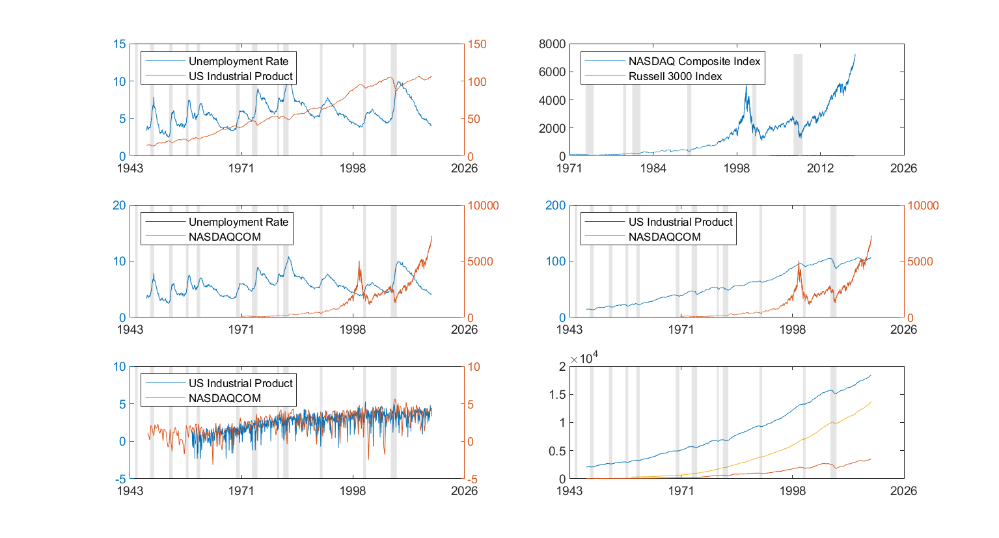
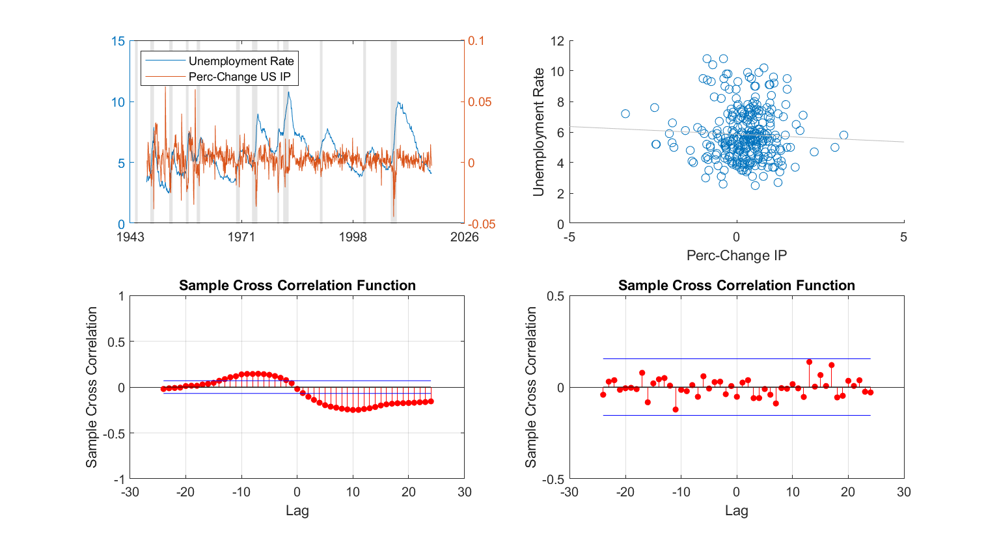

Contents
Macro-Finance 2017
Problem Set 2: Business Cycles Dynamics
clc
clear
close all
c = fred('https://research.stlouisfed.org/fred2/');
sd = '01/01/1948';
ed = '01/12/2018';
s1 = 'UNRATE';
s2 = 'INDPRO';
s3 = 'USRECM';
s4 = 'NASDAQCOM';
s5 = 'DJIA';
s6 = 'RVXCLS';
s7 = 'PCE';
s8 = 'GPDI';
s9 = 'GDPC1';
d1 = fetch(c,s1,sd,ed);
d2 = fetch(c,s2,sd,ed);
d3 = fetch(c,s3,sd,ed);
d4 = fetch(c,s4,sd,ed);
d5 = fetch(c,s5,sd,ed);
d6 = fetch(c,s6,sd,ed);
d7 = fetch(c,s7,sd,ed);
d8 = fetch(c,s8,sd,ed);
d9 = fetch(c,s9,sd,ed);
close(c)
Plot Time Series
f1 = figure
subplot(3,2,1)
plotyy(d1.Data(:,1),d1.Data(:,2),d2.Data(:,1),d2.Data(:,2))
legend('Unemployment Rate','US Industrial Product','location','nw')
recessionplot
datetick('x','yyyy','keepticks')
subplot(3,2,2)
plot(d4.Data(:,1),d4.Data(:,2),d6.Data(:,1),d6.Data(:,2))
recessionplot
legend('NASDAQ Composite Index','Russell 3000 Index','location','nw')
datetick('x','yyyy','keepticks')
subplot(3,2,3)
plotyy(d1.Data(:,1),d1.Data(:,2),d4.Data(:,1),d4.Data(:,2))
legend('Unemployment Rate','NASDAQCOM','location','nw')
recessionplot
datetick('x','yyyy','keepticks')
subplot(3,2,4)
[haxes,h1,h2] = plotyy(d2.Data(:,1),d2.Data(:,2),d4.Data(:,1),d4.Data(:,2))
legend('US Industrial Product','NASDAQCOM','location','nw')
recessionplot
datetick('x','yyyy','keepticks')
subplot(3,2,5)
plotyy(d7.Data(2:end,1),log(diff(d7.Data(:,2))),d8.Data(2:end,1),log(diff(d8.Data(:,2))))
legend('US Industrial Product','NASDAQCOM','location','nw')
recessionplot
datetick('x','yyyy','keepticks')
subplot(3,2,6)
plot(d9.Data(:,1),d9.Data(:,2)); hold on
plot(d8.Data(:,1),d8.Data(:,2)); hold on
plot(d7.Data(:,1),d7.Data(:,2)); hold off
recessionplot
datetick('x','yyyy','keepticks')
f1 =
Figure (1) with properties:
Number: 1
Name: ''
Color: [0.9400 0.9400 0.9400]
Position: [680 558 560 420]
Units: 'pixels'
Use GET to show all properties
haxes =
1×2 Axes array:
Axes Axes
h1 =
Line with properties:
Color: [0 0.4470 0.7410]
LineStyle: '-'
LineWidth: 0.5000
Marker: 'none'
MarkerSize: 6
MarkerFaceColor: 'none'
XData: [1×841 double]
YData: [1×841 double]
ZData: [1×0 double]
Use GET to show all properties
h2 =
Line with properties:
Color: [0.8500 0.3250 0.0980]
LineStyle: '-'
LineWidth: 0.5000
Marker: 'none'
MarkerSize: 6
MarkerFaceColor: 'none'
XData: [1×12246 double]
YData: [1×12246 double]
ZData: [1×0 double]
Use GET to show all properties

Cross-Correlations
figure
subplot(2,2,1)
plotyy(d1.Data(:,1),d1.Data(:,2),d2.Data(2:end,1),diff(log(d2.Data(:,2))))
legend('Unemployment Rate','Perc-Change US IP','location','nw')
recessionplot
datetick('x','yyyy','keepticks')
subplot(2,2,2)
scatter(100*diff(log(fts2mat(tomonthly(fints(d2.Data))))),d1.Data(3:end,2))
lsline
recessionplot
xlabel('Perc-Change IP')
ylabel('Unemployment Rate')
xlim([-5,5])
ylim([0 12])
subplot(2,2,3)
x = d1.Data(2:end,2);
y = diff(log(d2.Data(:,2)));
crosscorr(y,x,24)
ylim([-1 1])
subplot(2,2,4)
x = diff(d1.Data(2:end,2));
y = diff((fts2mat(tomonthly(fints(d6.Data)))));
crosscorr(y,x,24)
ylim([-0.5 0.5])
